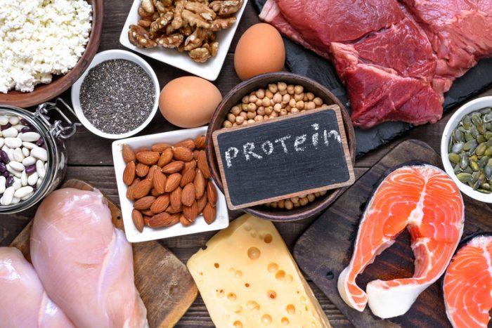
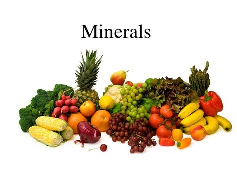

Healthy food to
live a healthier life
in the future
Enjoy a healthy life by eating healthy foods that
have extraordinary flavors that make your life
healthier for today and the future.

Enjoy a healthy life by eating healthy foods that
have extraordinary flavors that make your life
healthier for today and the future.
Hello! I'm Richi, a web develper and also a nutritionist. Meanwhile, you can contact me if you need something or maybe u can take a look to my instagram.
See you soon!
Contact meWe continue to consistently choose and maintain
the quality of the food served, sothat it remains fresh
and nutritious whwn you eat it.
A green salad filled with cabbage, mustered greens, and added chicken pieces for a more delicious.
The salad is mixed with various types of savory nuts sothat it adds a delicious and addictive test.
A salad combined with a delicious cut of bacon and mixed with tasty and fresh sesame oil.
Food is important part of a balance diet.
We delever organic fruits and vegitables fresh from our fields to your door step.

Fiber helps regulate the body's use of sugars, helping to keep hunger and blood sugar in check. Children and adults need at least 20 to 30 grams of fiber per day for good health, but most Americans get only about 15 grams a day. Great sources are whole fruits and vegetables, whole grains, and beans.
Your body needs protein to stay healthy and work the way it should. More than 10,000 types are found in everything from your organs to your muscles and tissues to your bones, skin, and hair. Protein is also a critical part of the processes that fuel your energy and carry oxygen throughout your body in your blood.
Vitamins and minerals are considered essential nutrients—because acting in concert, they perform hundreds of roles in the body. They help shore up bones, heal wounds, and bolster your immune system. They also convert food into energy, and repair cellular damage.
A healthy diet includes:
If you want to know more details about balanced diet than creat an account and sign in.
Sign up
Email
Set password
Re-type your password